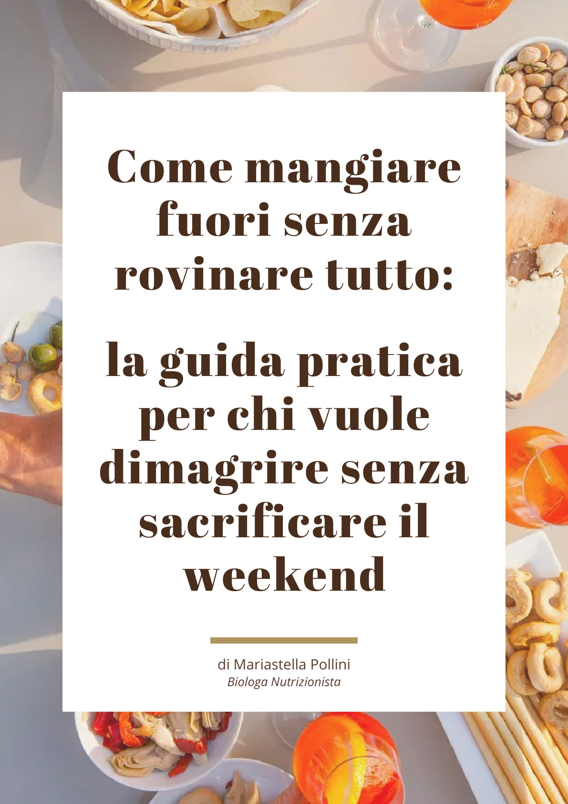

La tua miglior forma, una volta per tutte. Senza più diete.
Sono biologa nutrizionista e ti insegno a bilanciare tutto ciò che ti piace nella vita di tutti i giorni, pizza e dolci compresi. Lavoriamo anche su fame e sazietà, sulla fame emotiva e su cene, aperitivi e vacanze, perché è lì che si decide se un risultato resta.
- Online, ovunque tu sia
- Voghera (PV)
- Sementina, Bellinzona (CH)
Hai già provato di tutto, e alla fine si ricomincia da capo
- Hai fatto più diete di quante ne ricordi, e ogni volta i kg sono tornati.
- Fai attenzione tutta la settimana, poi arriva il weekend e salta tutto.
- Non sai mai cosa mangiare, soprattutto quando sei fuori casa.
- Ti senti spesso senza energie.
- Con il cibo hai un rapporto fatto di regole e sensi di colpa.
Quasi sempre è la conseguenza di anni di diete che ti hanno insegnato a dividere il cibo in permesso e proibito.
Il corpo risponde alla restrizione con più fame e più voglie, e prima o poi la dieta si rompe. Ti senti in colpa, riparti con una dieta ancora più rigida, e questo inclemente circolo vizioso riparte da capo.
Per uscirne devi trovare l'equilibrio alimentare che ti permette di raggiungere e mantenere la tua miglior forma fisica senza più restrizioni.
Ed è quello che faccio ogni giorno con le persone che seguo.
Lontano anni luce dalla classica dieta
Un piano alimentare da solo dura finché resisti. Per questo lavoriamo su tutto quello che c'è attorno all'alimentazione: i segnali del corpo, le emozioni, la vita sociale. È così che i risultati restano, una volta per tutte.
Torni ad ascoltare il tuo corpo
Impari a riconoscere quando hai fame davvero e quando hai mangiato abbastanza, ascoltando i segnali di sazietà, con la scala della fame ed esercizi pratici. Pian piano sono i tuoi segnali a guidarti, al posto della bilancia pesa-alimenti.
Niente è vietato
Pizza, dolci, il gelato della domenica: troviamo le frequenze e le quantità giuste per te. Così smetti di stare a dieta dal lunedì al venerdì e di sentirti "fuori controllo" nel weekend.
Cene, aperitivi e viaggi fanno parte del percorso
La convivialità fa parte della tua vita, quindi fa parte anche del percorso. Impariamo a gestire cene fuori, compleanni, feste e vacanze, perché i risultati restano solo se reggono anche lì.
Capisci cosa c'è dietro quella fame
La fame emotiva e quella nervosa arrivano con stress, noia, stanchezza. In quei momenti, con esercizi pratici impari a riconoscere cosa ti sta succedendo e a rispondere in un modo diverso, senza sensi di colpa.
Le uscite, le feste e le vacanze vanno sapute inserire nella tua vita. Solo così i risultati restano, una volta per tutte.
Tre passi per l'autonomia con il cibo
Partiamo da quello che mangi oggi e, passo dopo passo, arriviamo a farti scegliere in autonomia, in ogni occasione.
La tua cassetta degli attrezzi
Ricevi un piano personalizzato e tutti gli strumenti per adattarlo ai tuoi gusti, alle voglie, al tempo che hai e a quello che c'è in frigo. Fin dal primo giorno il piano segue te: se lunedì non hai voglia di pollo, si cambia.
Tutto trova il suo posto
Pizza, dolci, aperitivi, la ricetta vista sui social: impariamo a inserirli nella tua settimana con le frequenze e le quantità giuste per te. Nessun cibo vietato.
In autonomia, ovunque
Porzioni a occhio, ascolto di fame e sazietà, esercizi pratici sulla fame emotiva, la bilancia pesa-alimenti che va in pensione. Alla fine sai cavartela in autonomia, a casa, al ristorante e in vacanza.
Equilibrium
È il mio percorso di affiancamento e si svolge online, con i controlli che puoi fare anche in studio a Voghera o a Sementina. Lavoriamo insieme, con un confronto diretto, finché il nuovo modo di mangiare diventa il tuo.
- Una prima videochiamata di un'ora per conoscerci e costruire il tuo primo piano.
- Una videochiamata al mese per vedere i progressi e decidere i passi successivi.
- Chat WhatsApp diretta con me per tutto il percorso.
- La community WhatsApp, con consigli e ricette ogni settimana.
- Guide, ricette e menu sempre a portata di mano.

Online o in studio: due modi diversi di lavorare insieme
Il percorso Equilibrium è online, con i controlli che puoi fare anche in studio. A Voghera e a Sementina ricevo anche per le classiche visite individuali.
Online: Equilibrium
Il percorso completo: videochiamate, chat WhatsApp con me, community e materiali. Ovunque tu sia.
Scopri di più →
In studio a Voghera (PV)
Visite individuali in presenza, in Via Verdi 46.
Scopri di più →In studio a Sementina, Bellinzona (CH)
Visite individuali in presenza, in Via Pobbia 24.
Scopri di più →Cresciuta tra l'orto e la cucina di mamma
Sono nata in campagna, papà agricoltore e mamma cuoca. Da bambina passavo i pomeriggi a raccogliere le uova del pollaio e a cucinare le verdure dell'orto.
Da lì sono arrivate la laurea in Biologia, la specialistica in Scienze della Nutrizione con 110/110 e centinaia di persone seguite, prima negli studi di Milano e poi online. Oggi vivo in Svizzera e lavoro sia in presenza che online.
Il mio lavoro è fare da ponte tra quello che dice la scienza e la vita vera, fatta di cene con gli amici, pranzi della domenica e serate in cui non hai voglia di cucinare.

Cosa dicono le persone che seguo
Conosco la Dottoressa da qualche anno e mi sono affidata a lei per risolvere i miei problemi legati all'alimentazione. Stella mi ha aiutata non solo a rimettermi in forma, ma mi ha insegnato a mangiare bene, che sembra facile... ma non sempre lo è. Con i suoi consigli ho imparato a gestire i diversi componenti dei pasti e a non sentirmi in colpa quando cadevo in piccoli "sgarri". È sempre un piacere farsi seguire da lei perché rende semplice quello che per chi è "a dieta" sembra impossibile. Consigliatissima anche solo per una chiacchierata che vi aprirà le porte di un mondo che magari non si pensava potesse esistere! (Come ad esempio, essere a dieta ma poter far colazione con il panettone!!) Grande professionista!
La Dottoressa è una professionista estremamente competente e attenta, apprezzo il suo approccio motivante e la chiarezza con cui spiega ogni singolo passaggio del percorso. La consiglio a chi cerca una persona seria, preparata e appassionata al suo lavoro.
Professionale, pratica, disponibile alle domande via chat, empatica: e questo a mio avviso non è poco, perché aiuta molto il paziente nel percorso che deve percorrere.
La Dott.ssa Pollini è estremamente professionale, attenta, efficace ed empatica. I risultati sono garantiti da schemi e tabelle facilmente comprensibili e attuabili, formulati sulla quotidianità del paziente.
Penso di reputarmi fortunato ad aver contattato e di conseguenza fatto la prima visita ieri con la dssa Mariastella Pollini. Mi sono trovato a mio agio, persona molto preparata, competente, professionale, molto cortese e amante del proprio lavoro. Esperienza positiva che sicuramente continuerò. Che dire, consigliatissima.
Le mie guide gratuite
Per iniziare subito a mangiare in modo più equilibrato, anche quando hai poco tempo o sei fuori casa.

Mangia bilanciato quando non hai tempo
Lista della spesa intelligente, piatto bilanciato, il metodo che ti fa risparmiare tempo e un menu settimanale.
Leggi la guida →
Guida alle uscite
Pizza, aperitivi, cene fuori: come goderti le uscite senza sensi di colpa e senza mandare all'aria tutto.
Leggi la guida →

Ci vediamo su Instagram?
Lì condivido consigli pratici, ricette veloci, le storie delle persone che seguo e un po' della mia vita.
Vuoi capire se Equilibrium fa per te?
Scopri come funziona il percorso, cosa include e a chi è pensato. Poi, se ti convince, ci conosciamo in una videochiamata gratuita.